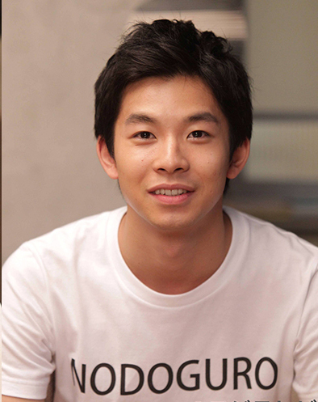
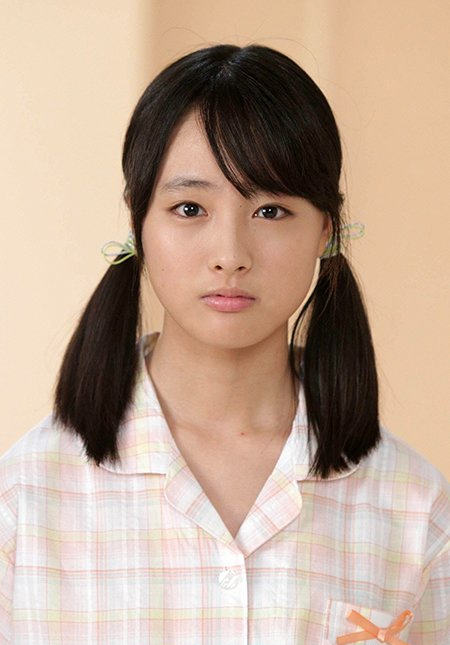
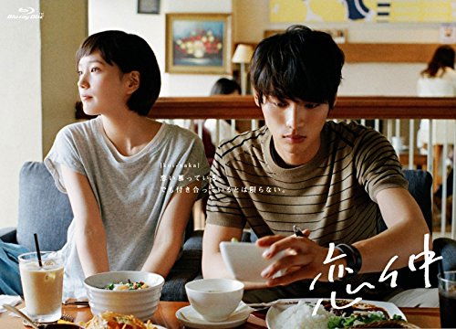

キャスト
三浦 葵（みうら あおい）
演ー福士 蒼汰
建築設計事務所のアシスタントを務める青年。あかりと親友だった。
芹沢 あかり（せりざわ あかり）
演ー本田 翼
本作のヒロインで、葵の親友。
蒼井 翔太（あおい しょうた）
演ー野村 周平
高３の夏に東京から葵、あかり、公平のいる高校に転校してきた。葵、公平と同じクラスだった。７年後医者になる。

金沢 公平（かなざわ こうへい）
演ー太賀
葵と翔太の友人。
三浦 七海（みうら ななみ）
演ー大原 櫻子
葵の妹。就職活動中。

山城 心音（やましろ ここね）
演ー大友 花恋
翔太の勤める病院の患者。
丹羽 万里子（にわ まりこ）
演ー吉田 羊
葵が務める建築設計事務所の社長。
磯原 新一（いそはら しんいち）
演ー永井 大
葵が務める建築設計事務所の先輩。
富永 美鈴（とみなが みれい）
演ー山本 美月
葵の同僚で、先輩。
商品情報

恋仲 Blu-ray BOX
￥２５．３８０（税込）
恋仲 DVD BOX
￥２０．５２０（税込）

恋仲 書籍
￥１．２９６（税込）
主題歌
君がくれた夏 家入レオ
君の描いた 未来の中に 僕はいない その時代もない まだ少しだけ 傷を抱えたふたりは
夢の続き探していた
思うままに 色づいてくと思ってた 答えなんか
見つけられずに それでもこの世界 廻り続けて
君がくれた夏 その奇跡 僕は忘れない
oh 溢れそうな想い あの夕日に隠して
so, why so, why 気づいていた true love true love
時の隙間に 流れ込む風 教室の その片隅で
揺れる前髪 ただ見とれていた僕は
君に 恋をしたんだよ
まるで空を 歩いているみたいな日々
当たり前に そばにいたこと
未来なんていつもそう 疑いもせず
君がいた夏に この気持ち うまく言えなくて
oh ふたつの心は 何故に離れていくの？
so , why so , why 届かなくて
愛情の罠だって 気づいたときは遅すぎて
捻じれた感情は 光求め彷徨う
叶わない願い 置き去りのままで
君がくれた夏 その奇跡 僕は忘れない
so , why so , why 気づいていた true love true love